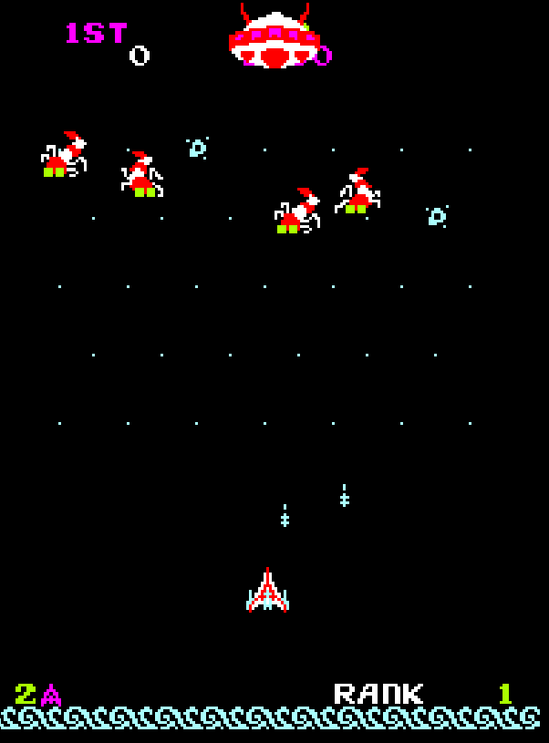
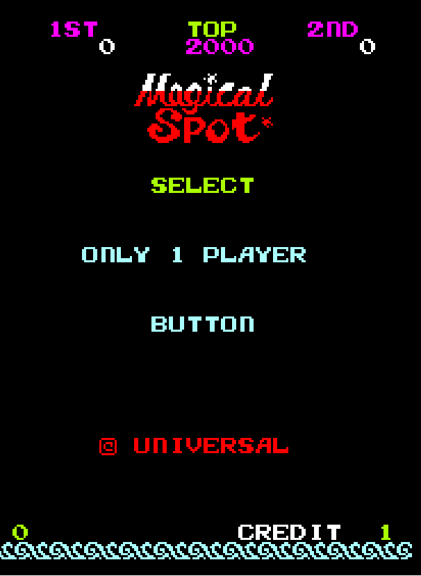

The Magical and Difficult Spot
The classic arcade game that I chose to play was “The Magic Spot” it was very straight forward: use the left and right keys to move and shoot the monsters with “control.” By now, it should be obvious that this was a two way shooter game. Overall it wasn’t as easy as I expected it to be, in fact I had a bit of difficulty trying to get the “5000” score (which is the goal here according to the instructions or something like that). But nevertheless I did my best trying to dodge the monsters laser/attacks and destroy them before they landed below me and made their cocoon. I found my ship’s shooting and movement speed to be quite slow and Sometimes I could barely kill the monsters, specially since each time they move they disappear and only reappear after a while; Therefore, I ended up losing a lot. But I still kept trying to get better and beat the game (I didn’t).

In my opinion, playing this game in an emulator/computer takes the game’s whole magic and environment away. It doesn’t feel the same as it would inside an Arcade full of arcade machines making different sounds or playing it on a normal arcade cabinet with friends/people watching you trying to beat their high score or just seeing how far you can go. There’s also no risk playing on an emulator, you don’t lose money or your high score.
